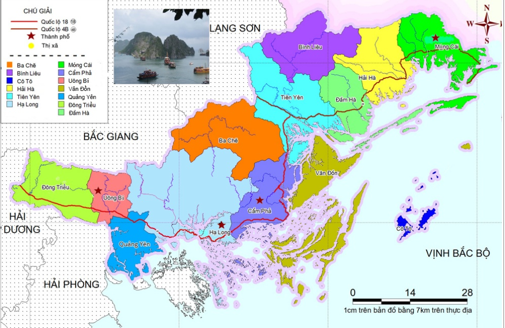
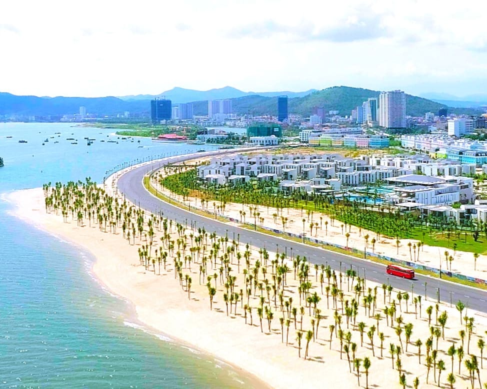

Tôi và Quê Hương
Địa lý

- Vịnh Hạ Long là một vịnh nhỏ thuộc phần bờ tây vịnh Bắc Bộ tại khu vực biển Đông Bắc Việt Nam, bao gồm vùng biển đảo của thành phố Hạ Long thuộc tỉnh Quảng Ninh.
- Hạ Long có diện tích 1.553km² , dân số năm 2023 là 322.710 người[3], mật độ dân số đạt 288 người/km²
Hành chính
Thành phố Hạ Long có 20 đơn vị hành chính trực thuộc, gồm 20 phường: Bạch Đằng, Bãi Cháy, Cao Xanh, Cao Thắng, Đại Yên, Giếng Đáy, Hà Khánh,
Hà Khẩu, Hà Lầm, Hà Phong, Hà Trung, Hà Tu, Hồng Gai, Hồng Hà, Hồng Hải, Hùng Thắng, Trần Hưng Đạo, Tuần Châu, Việt Hưng, Yết Kiêu.
Lịch sử

Ngày 26 tháng 9 năm 2003, thành phố Hạ Long được công nhận là đô thị loại II.
Ngày 1 tháng 10 năm 2003, chuyển hai xã Hùng Thắng và Tuần Châu thành 2 phường có tên tương ứng.
Ngày 5 tháng 2 năm 2010, chuyển hai xã Đại Yên và Việt Hưng thành 2 phường có tên tương ứng.
Ngày 10 tháng 10 năm 2013, Chính phủ ban hành Quyết định số 1838/QĐ-TTg công nhận thành phố Hạ Long là đô thị loại I trực thuộc tỉnh Quảng Ninh.
Ngày 17 tháng 12 năm 2019, Ủy ban thường vụ Quốc hội ban hành Nghị quyết số 837/NQ-UBTVQH14 về việc sắp xếp các đơn vị hành chính cấp huyện,
cấp xã thuộc tỉnh Quảng Ninh (nghị quyết có hiệu lực từ ngày 1 tháng 1 năm 2020)
Văn Hóa-Du Lịch
Một số địa điểm nối tiếng
- Vịnh Hạ Long
- Vịnh Bái Tử Long
- Đảo Soi Sim
- Đảo Tuần Châu
- Khu du lịch Bãi Cháy
- Đảo Cô Tô
- Đảo Cát Bà
- Đảo Ti Tốp